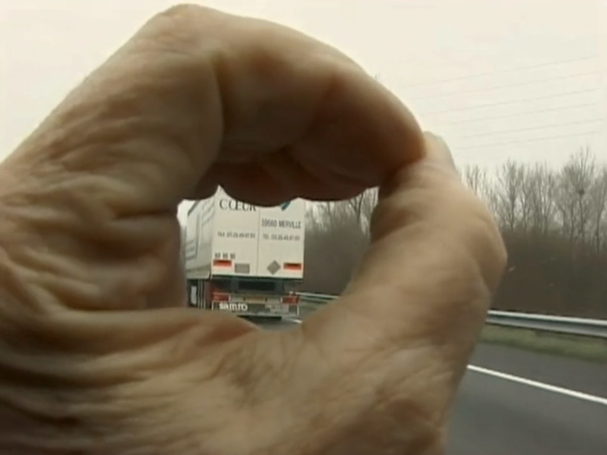
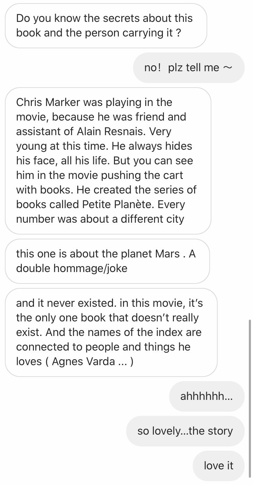
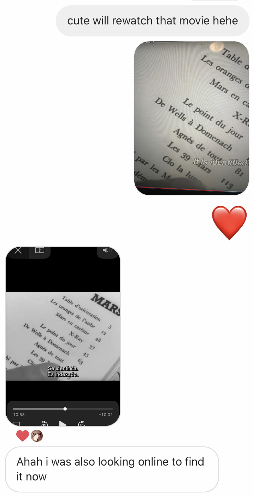

1. My favorite part “catching trucks”

2. The Gleaners and I (Trailer) Link
3. The Life and Times of International Treasure Agnès Varda Link
4. After I watched Toute la mémoire du monde(1957),
he told me a story behind the film:

Then I rewatched it to find Varda and Marker...

The moment makes the film more beautiful to me.